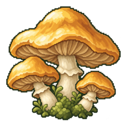
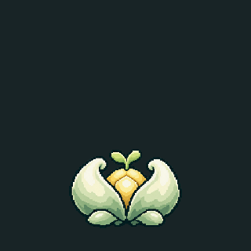
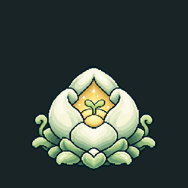
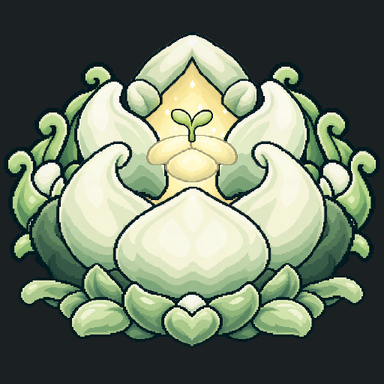
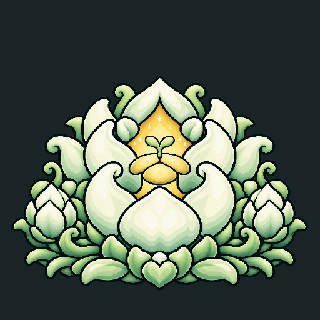
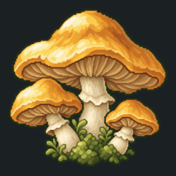
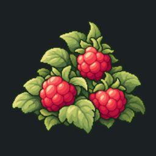
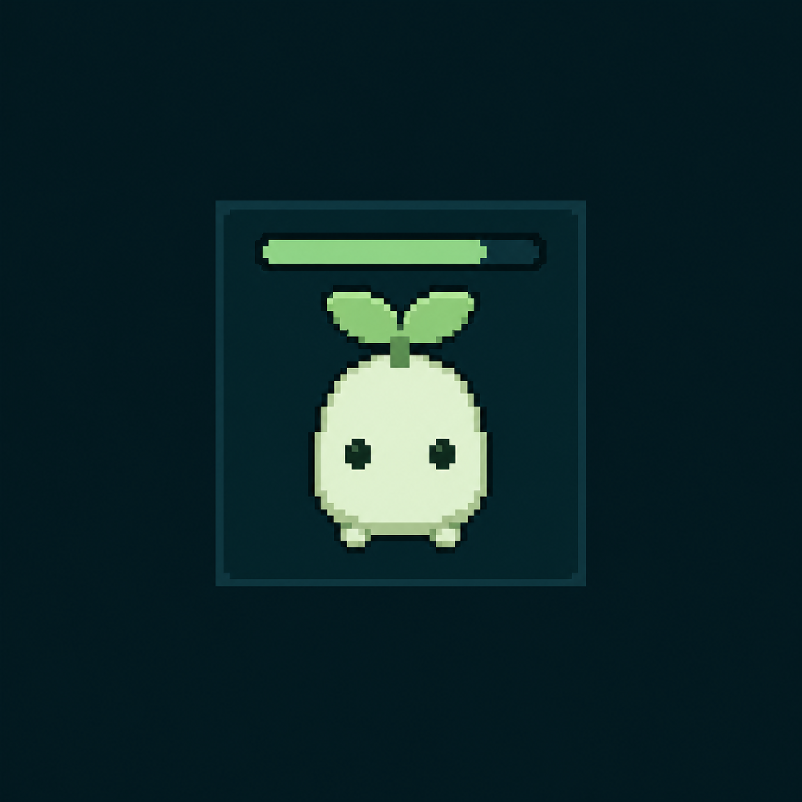
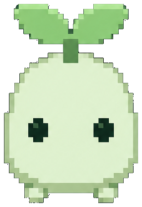

핵심
방향
- 속성을 조합해 유닛 템플릿을 만들고 군락을 번성시키는 전략 게임이다.
- 첫 화면은 개체 없이 둥지만 있으며 첫 생명체부터 직접 설계한다.
- 이름 붙인 설계로 개체를 탄생시키고 채집·운반·방어를 관찰한다.
- 개체 생산과 둥지 성장에 진화 포인트를 나눠 쓴다.
- 외부 빌드 없는 단일 HTML에서 군락과 월드의 상호작용을 보여 준다.
현재 상태
| 구분 | 목표 | 현재 구현 |
|---|---|---|
| 월드 | 후보별 생활권 합성 | 10,000×10,000칸의 노이즈 지형이며 생활권 합성은 미구현 |
| 설계·탄생 | 속성 슬롯과 사용자 병종 | 콩 외형·DNA 문양·속성·시너지 코덱스·자동 병종명·수동 생산 |
| 둥지 | 군락 성장과 슬롯 확장 | 빈 둥지 시작·성장·슬롯 및 보관량 증가·레벨별 4단계 꽃잎 애니메이션 |
| 활동 | 채집·운반·방어 | 탐색·개인 경로·공용 길·기초 자동 전투와 사체 회수 |
| 경쟁 | 주변 군락과 번성 경쟁 | 첫 탄생 90초 뒤부터 경쟁 개체가 접근하는 시험 동작이며 분가·건설은 미구현 |
핵심 루프
- 둥지에서 속성 슬롯을 채우고 이름을 지어 첫 개체를 탄생시킨다.
- 개체가 자율적으로 찾은 먹이를 둥지로 회수해 진화 포인트를 얻는다.
- 저장된 템플릿으로 추가 생산하거나 새 설계를 만든다.
- 실제 활동을 보고 설계를 수정하며 변경은 다음 탄생부터 적용한다.
- 둥지를 성장시켜 슬롯과 포인트 보관량을 늘리고 군락을 확장한다.
플레이 감각
- 첫 설계부터 유저가 관여하며 초기 병종은 미리 제공하지 않는다.
- 이름·외형·능력으로 자신이 만든 설계와 실제 활동을 연결한다.
- 부족한 설계도 허용하고 관찰 결과로 다음 설계를 개선하게 한다.
- 초기 능력의 절대 효율보다 같은 제약에서의 상대적인 조합을 겨룬다.
- 이동·먹이 회수·길 형성·전투의 결과를 관찰할 수 있게 표현한다.
시스템
세계와 객체
- 월드는 10,000×10,000칸이며 숨은 둥지 후보를 중심으로 생성한다.
- 최초 둥지는 같은 등급에서 시작하며 대체로 떨어지되 근접 경쟁도 허용한다.
- 입지에는 여러 등급을 두되, 격차가 정해질 때까지 동일 조건으로 설계한다.
- 후보·등급은 생성에만 쓰며 개체는 발견한 지형·자원으로 행동한다.
- 미정: 후보 수·간격·등급 수와 격차·비율, 분가 개체의 정착 조건.
생활권과 지형
- 후보별 거리장과 노이즈를 합성해 지형·자원·리스크를 만든다.
- 중심은 시작 생활권이며 멀수록 이득·리스크가 커지고 이웃 중심에서 낮아진다.
- 검토안: 가장 가까운 후보까지의 거리를 공통 이득·리스크 곡선의 기준으로 삼는다.
- 지형은 이동·생존·자원·위험의 차이가 있는 단계로 표현한다.
- 미정: 거리별 곡선·경계 변형·영향 범위·거리 기준과 지형별 효과.
탄생과 수명
- 기본 개체는 탐색·채집·운반·전투를 모두 수행한다.
- 탄생에는 진화 포인트만 쓰며 먹이로 자동 생산하지 않는다.
- 시험 탄생 비용은 기본 3점과 장착 슬롯당 2점이다.
- 개체는 탄생 당시의 이름·설계·능력을 유지하며 사망 시 사체를 남긴다.
- 성과 기반 개인 성장과 수명·사체 가치의 정식 수치는 미정이다.
속성 슬롯
- 최대 슬롯은 둥지 레벨에 따르며 시험판은 4개에서 성장당 1개 늘어난다.
- 같은 속성을 여러 슬롯에 장착할 수 있으며 효과는 누적된다.
- 감각은 시야 +2칸, 운반은 +2개, 이동은 +0.5칸/초다.
- 힘은 공격력 +2, 저항은 체력 +4이며 운반 능력과 독립적이다.
- 효과는 시험 수치이며 빈 슬롯을 남겨 둔 설계도 탄생할 수 있다.
진화 포인트와 자원
- 먹이와 사체는 둥지에 회수한 양만큼 진화 포인트가 되며 처치·사망 즉시 지급하지 않는다.
- 시험판은 30점으로 시작하며 사체 가치는 탄생 비용의 절반과 운반 중인 먹이다.
- 둥지 성장 비용은 레벨당 40점, 보관량은 레벨당 100점으로 시험한다.
- 꿀버섯은 칸당 50을 보유하며 운반·고갈·향기 탐색과 공용 길을 사용한다.
- 정식 수치·자원 재생·보관량 초과 처리와 사체 회수 경쟁은 미정이다.


Idle
활성 중에는 시뮬레이션 시간을 누적한다. 비활성 진행과 오프라인 보상은 저장 규칙이 생긴 뒤 추가한다.
표현·자산
화면 규칙
- 캔버스는 가용 영역을 채우며, 기본 배율 144에서 시작하고 2~144 사이로 조절한다.
- 저배율에서는 여러 셀을 묶어 그리되 지형 단계의 판정과 색은 유지한다.
- 좌표·배율·시간값은 숨기고, 최근 참가한 열린 방은 맨 위에 ‘최근에 참가했던 방’으로 표시한다.
- 둥지는 5×5칸 안에서 Lv.1 씨앗 둥지·Lv.2 어린 꽃·Lv.3 기존 둥지·Lv.4 이상 꽃 군락으로 자란다.
각 단계는 뿌리를 고정하고 7.8초 대기 뒤 꽃잎을 9.6초간 열고 닫으며, 안쪽 노란 부분만 빛난다.












시작 생명체 자산
정식 화면은 사용자가 선택한 이미지 생성 결과를 투명 스프라이트로 추출해 사용한다. 절차적 재현은 기준 자산과 디테일이 달라지므로 사용하지 않는다.




입력
- 둥지 제목 옆에서 이름을 바꾸고 레벨·진화 포인트·게이지·성장을 확인한다.
- 코덱스에서 속성·시너지·둥지 성장을 검색하고 링크와 이력으로 탐색한다.
- 속성을 클릭해 중복 장착하고 오른쪽 위 ⓘ로 코덱스를 열며 닫으면 설계로 돌아온다.
- 유닛 카드를 누르면 탄생하며 카드 안 설계 수정과 빈칸의 +로 설계한다.
- 맵 이동은 드래그·WASD·방향키, 확대는 휠, 둥지 이전·다음은 PgUp·PgDn, 첫 둥지는 Home이다.
저장
초기 저장은 버전 정보를 포함한 localStorage로 둔다. 내보내기, 가져오기, 계정 동기화는 아직 제외한다.
이후
다음 단계
- 주변 군락과 입지에 따라 유닛 설계의 장단점이 드러나는 경쟁.
- 후보별 생활권을 합성한 월드와 같은 등급에서의 출발.
- 군락 간 자율 전투·사체 회수·분가·건설과 자원 경쟁.
- 속성별 외형 확장과 상대 설계를 관찰하는 정보 표현.
남은 결정
- 속성 종류·효과·슬롯 성장·탄생 및 둥지 성장 비용의 정식 수치.
- 상대 속성을 관찰로 파악하는 범위와 표현.
- 번식 주체와 분가 개체의 정착·건설 조건.
- 길의 유지·쇠퇴와 향기·공용 길 추종의 속성 연결.
- 저장·비활성 진행·오프라인 보상의 범위와 적용 시점.